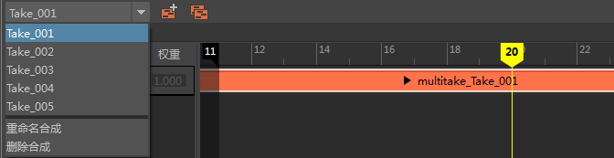

Take 是保存在一个文件中的动画实例。Autodesk MotionBuilder 用于将多个动画“Take”保存到单个 FBX 文件。时间编辑器支持通过 FBX 导入的 Take，并允许选择在导入后如何组织它们。
大纲视图将显示已导入场景中的 Take。
将包含多个 Take 的 FBX 文件导入时间编辑器
- 将 FBX 文件拖动到时间视图中的轨迹上。此时将显示“导入”(Import)窗口。
- 在“Take 选项”(Take Options)区域中，选择希望 Take 在时间编辑器中如何显示：
- 到一个组中(Into a Group)
- 所有 Take 成为组片段内包含的单独片段。请参见将多个片段合并为组片段。
-

- 到多个合成中(Into Multiple Compositions)
- 每个 Take 将变为一个片段并插入新合成中。请参见通过时间编辑器合成创建多个动画故事。
-

- 作为片段序列(As a sequence of clips)
- 每个 Take 将变为一个片段并沿动画轨迹并排放置。
-

注： 仅时间编辑器中的拖动操作支持导入多个 Take。不能使用 Maya 导入功能调入多个 Take。